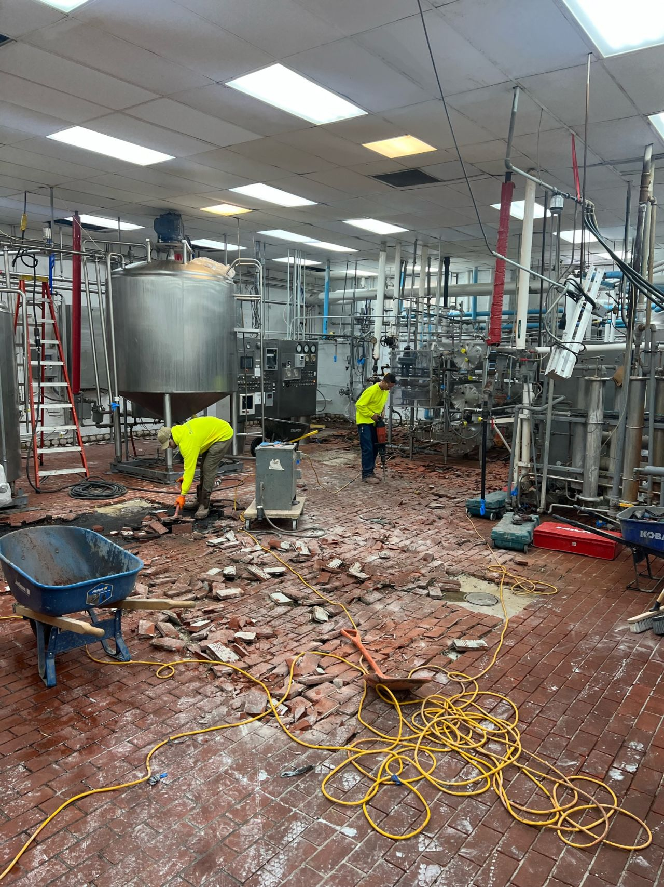
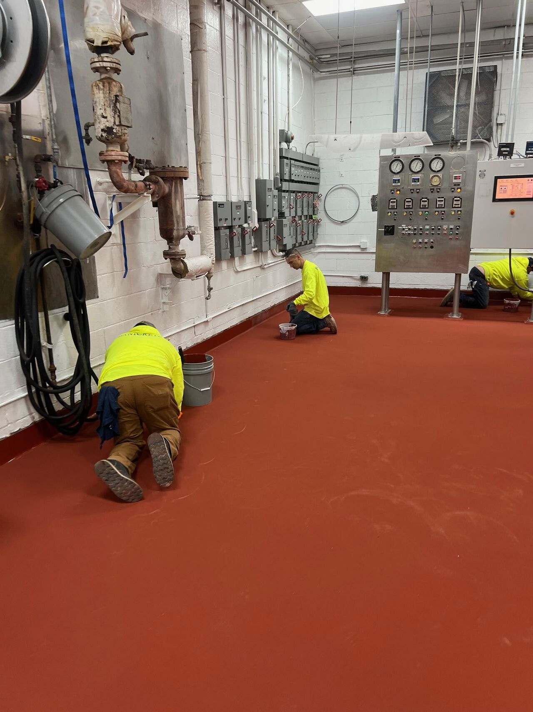

If you want to understand the scale of a dairy brick removal, consider this: we filled a 30-yard dumpster with just the demo material. That's how much failing brick, grout, and mortar bed came out of this midwest dairy facility before we could even start building the new floor.
The Demo
Dairy brick demolition is labor intensive. Every brick has to come up. Every piece of grout has to be chipped out. The mortar bed underneath has to be removed down to clean concrete. There are no shortcuts — the preparation is what makes the new floor last.
The Build
With the substrate exposed and profiled, we installed SaniCrete SL — our 3/8" self-leveling cementitious urethane — with proper sloping to all drain locations. The floor was built to move water where it needs to go, eliminating the pooling and standing water that plagued the old brick floor.
Radius Cove & Finishing
Radius cove base was installed at every floor-to-wall transition — creating the seamless, sanitary connection that makes daily washdown effective and keeps inspectors satisfied. The heavy-duty, non-slip surface handles everything dairy processing throws at it: CIP chemicals, thermal shock from hot washdowns, and constant forklift traffic.
The end result is nothing short of spectacular — a sentiment echoed by everyone who saw the transformation. From 30 yards of crumbling brick to a seamless, USDA-compliant floor built to last.